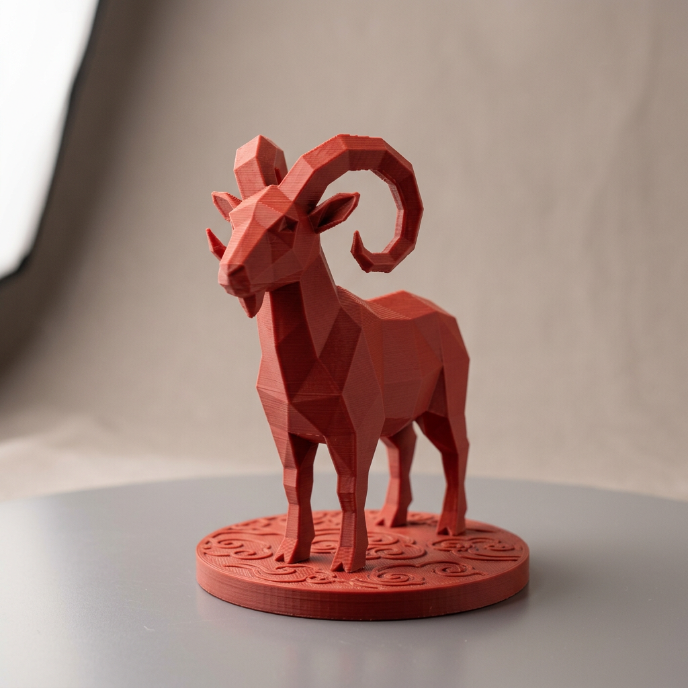
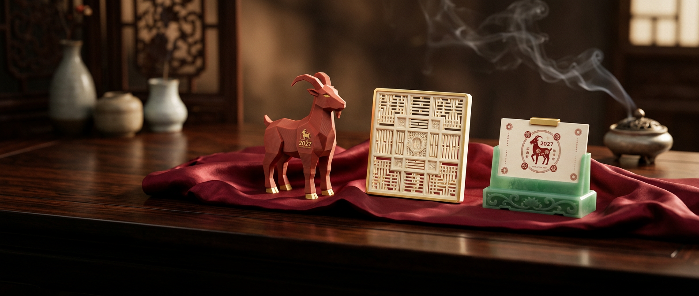
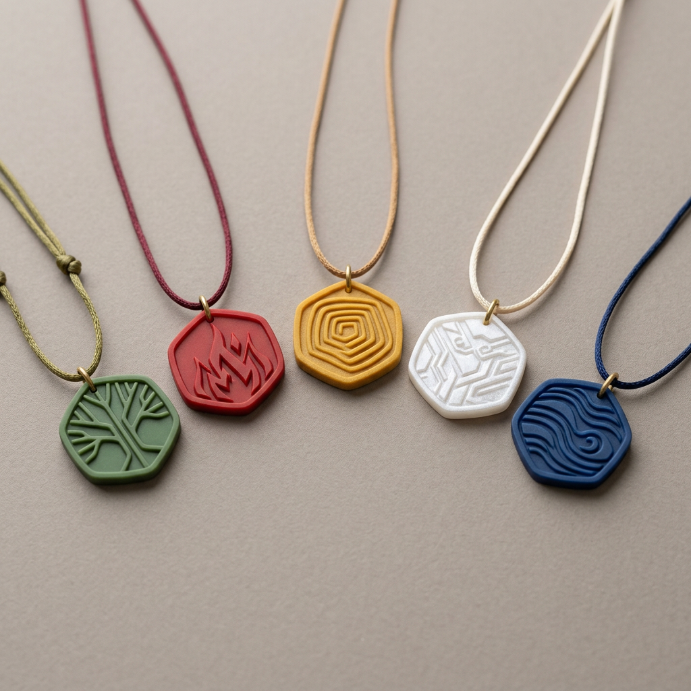
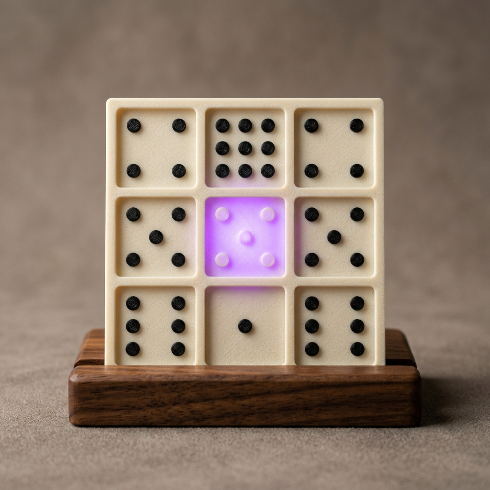
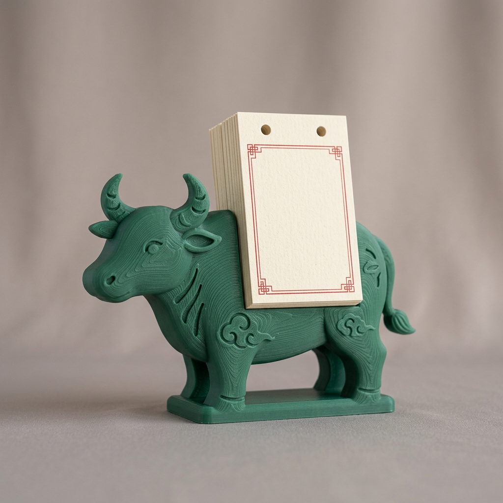
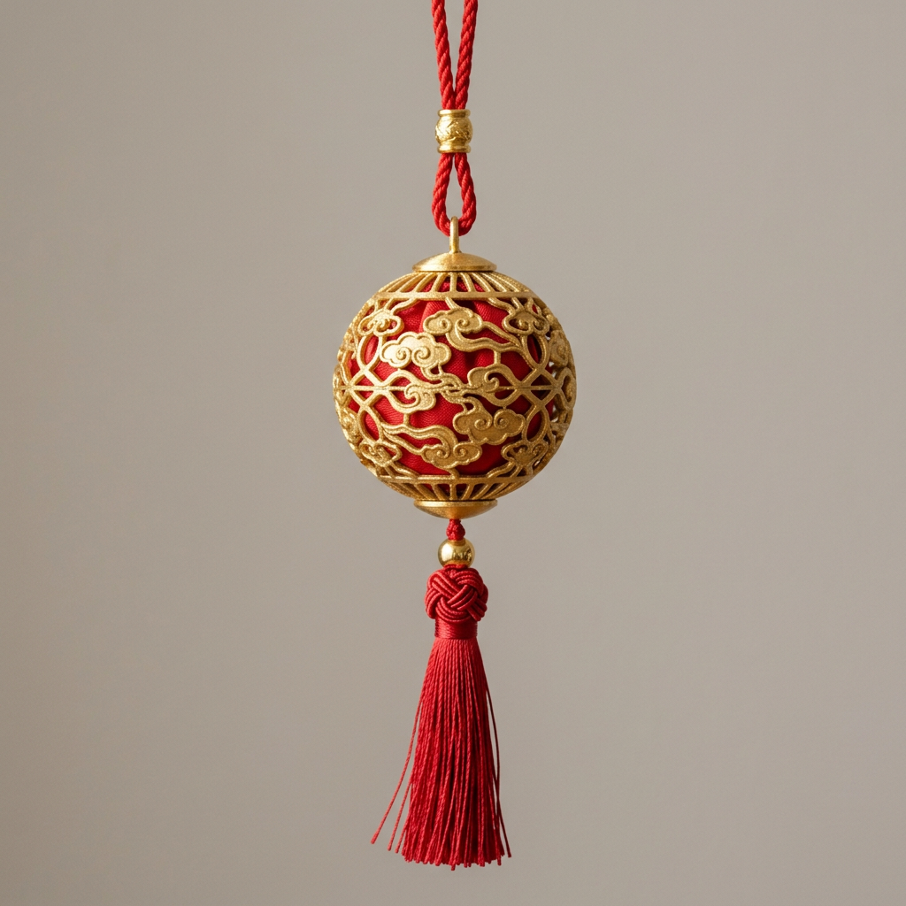

2027 丁未羊年
个性化年度通胜 · 2027 丁未羊年
传统通书 × 你的八字：流年流月、个人吉日、贵人方位与开运色。
图：2027 年度 3D 打印周边
第一步
填好生辰，按真太阳时排出你的四柱。
出生地用于经度校正；不确定时辰也能排三柱。
命盘 · 免费
你的四柱命盘
时辰不详，按年、月、日三柱推算，结果较粗略，仅供参考。
流年总论 · 免费
丁未年
五维分数由你的喜用五行、流年十神、太岁关系与十二流月平均分换算，满分 100。
十二流月
2027 年按节换月，每月一张卡。
喜用五行得月 +1，月支冲日支或天干为忌 −1，满 5 星。
个人吉日
每月三个与你日支相合的日子。
方位与开运
贵人与文昌在哪个方向。
解锁
命盘与流年免费，完整年度通胜一次买断。
早鸟价至 2027 年立春前。
年度报告
¥68 早鸟，立春前
- 十二流月详解
- 全年个人吉日与慎日
- 方位与开运色数
年度报告 + 每日订阅
推荐
¥128 /年
- 完整年度报告
- 全年每日个人宜忌推送
家庭包 3 人
¥168
- 3 份完整年度报告
- 家人生辰分别排盘
演示版：支付暂未开通。
通用通胜 · 免费
人人通用的历书内容，加上你的个人提示。
通用
春牛图
春牛图以芒神与春牛的衣色、鞋袜、站位寓示一年农事与气候，是迎春的民俗图像。今天读它，读的是农耕社会对时令的观察，而非预言。
通用+个人提示
年神方位
2027 太岁在未，方位西南偏南。传统上动土、搬迁避免正对太岁方。
生成报告后，这里显示你的年支、日支与太岁的关系。
通用
二十四节气
本页流月以十二“节”换月（约）：
- 立春 2/4 · 惊蛰 3/6 · 清明 4/5
- 立夏 5/6 · 芒种 6/6 · 小暑 7/7
- 立秋 8/8 · 白露 9/8 · 寒露 10/8
- 立冬 11/7 · 大雪 12/7 · 小寒 2028/1/6
通用+个人提示
九宫飞星
2027 九紫入中。上北下南：
一白西北五黄北三碧东北
二黑西九紫中宫七赤东
六白西南四绿南八白东南
生成报告后，这里标出你的贵人方位所落之星。
通用+个人提示
每日黄历
今日干支
通用宜忌按日干支排定；报告另以你的日支标出个人吉日与慎日。
| 板块 | 类型 | 依据 |
|---|---|---|
| 流年运程、流月、择吉 | 个性化 | 你的日主、喜用与日支 |
| 贵人方位、开运色数 | 个性化 | 日干天乙贵人、文昌与喜用五行 |
| 春牛图、节气、地母经 | 通用 | 历书原文，人人相同 |
| 年神方位、九宫飞星、每日宜忌 | 通用+个人提示 | 通用内容，附你的个人提示 |
2027 年度周边 · 3D 打印系列
每件周边都和你的报告联动。
生成报告后，与你喜用五行相配的一件会被标出。




省¥97